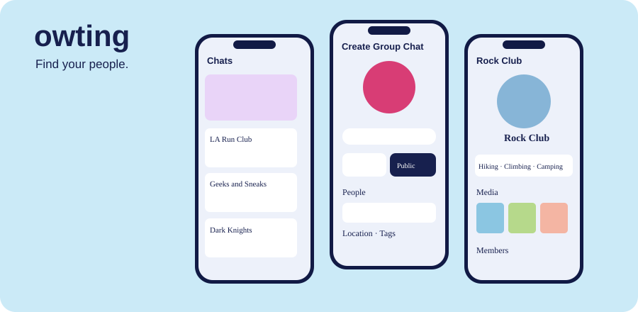

Product Design / Mobile / Social
Owting
Group Chats
Designing a connected experience for discovering, creating, and managing interest-based communities.
UX/UI DesignInteraction Design2025
01 / Overview
From finding a group to belonging to one.
Owting is a social app concept centered on connecting people through local interests and activities. The Group Chats design work connects three core tasks: finding a relevant community, setting up a new group, and managing the people and information within it.
02 / Design challenge
How can a social app make it easier to find your people?
The interface needs to communicate what each community is about, help people understand who can join, and support the transition from browsing groups to participating in them. The design explores how location, activities, tags, and member context can make that journey more legible.
03 / Experience architecture
Three connected journeys
Find communities
Browse featured chats, interest-based recommendations, and groups joined by friends.
Define a group
Set a name, visibility, location, activities, tags, and initial members.
Keep it organized
Review membership requests, adjust group settings, and share the group.
04 / Design decisions
Make context visible before commitment.
Group cards expose images, activity labels, member cues, and short descriptions so users can assess relevance before opening a group. The discovery concepts also explore separating personalized recommendations from groups friends have joined.
05 / Group creation
Give groups an identity and clear boundaries.
The creation flow explores group imagery, names, public or private visibility, location, activities, descriptive tags, and inviting friends or matches. These choices shape how a group is found and who can participate.
06 / Membership and sharing
Design for what happens after a group is created.
Group profiles bring together the community description, media, activities, and members. Supporting states cover requests to join, member removal, group settings, and sharing through other apps.
07 / Reflection
A social experience is a system of connected decisions.
This exploration demonstrates how discovery, group setup, privacy, and membership management need to work together. The next step would be validating whether users understand group visibility, joining requirements, and discovery labels through prototype testing.
The screens are design concepts; this case study does not claim a launched feature or measured user outcomes. The preview artwork is a simplified illustration of the supplied Figma screens.
← Back to selected work